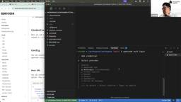

Generative Agents Tech Blog
https://blog.generative-agents.co.jp/
Generative Agents Tech Blog
フィード

「AIエージェントキャッチアップ #51 - opencode」を開催しました
Generative Agents Tech Blog
ジェネラティブエージェンツの大嶋です。 「AIエージェントキャッチアップ #51 - opencode」という勉強会を開催しました。 https://generative-agents.connpass.com/event/370374/generative-agents.connpass.com アーカイブ動画はこちらです。 www.youtube.com opencode 今回は、OSSのCLI型コーディングエージェント「opencode」をキャッチアップしました。 opencodeのGitHubリポジトリはこちらです。 github.com 今回のポイント opencodeとは open…
5日前

「AIエージェントキャッチアップ #50 - MCP Registry」を開催しました
Generative Agents Tech Blog
ジェネラティブエージェンツの大嶋です。 「AIエージェントキャッチアップ #50 - MCP Registry」という勉強会を開催しました。 generative-agents.connpass.com アーカイブ動画はこちらです。 www.youtube.com MCP Registry 今回は、App StoreのようにMCPサーバーを提供する仕組み「MCP Registry」をキャッチアップしました。 MCP RegistryのGitHubリポジトリはこちらです。 github.com 今回のポイント MCP Registryとは MCP RegistryのGitHubリポジトリは、以下…
10日前
「AIエージェントキャッチアップ #49 - Byterover Cipher」を開催しました
Generative Agents Tech Blog
ジェネラティブエージェンツの大嶋です。 「AIエージェントキャッチアップ #49 - Byterover Cipher」という勉強会を開催しました。 generative-agents.connpass.com アーカイブ動画はこちらです。 www.youtube.com Byterover Cipher 今回は、コーディングエージェント向けのメモリーレイヤー「Byterover Cipher」をキャッチアップしました。 CipherのGitHubリポジトリはこちらです。 github.com 公式ドキュメントはこちらです。 docs.byterover.dev 今回のポイント Byterov…
12日前
「AIエージェントキャッチアップ #48 - Vibe Kanban」を開催しました
Generative Agents Tech Blog
ジェネラティブエージェンツの大嶋です。 「AIエージェントキャッチアップ #48 - Vibe Kanban」という勉強会を開催しました。 generative-agents.connpass.com アーカイブ動画はこちらです。 www.youtube.com Vibe Kanban 今回は、コーディングエージェントへの作業依頼を効率化する「Vibe Kanban」をキャッチアップしました。 Vibe KanbanのGitHubリポジトリはこちらです。 github.com 公式ドキュメントはこちらです。 www.vibekanban.com 今回のポイント Vibe Kanbanとは Vi…
24日前
「AIエージェントキャッチアップ #47 - Deep Agents (LangChain)」を開催しました
Generative Agents Tech Blog
ジェネラティブエージェンツの大嶋です。 「AIエージェントキャッチアップ #47 - Deep Agents (LangChain)」という勉強会を開催しました。 generative-agents.connpass.com アーカイブ動画はこちらです。 www.youtube.com Deep Agents 今回は、よく使われているAIエージェントの構成を汎用化した、LangChainの「Deep Agents」をキャッチアップしました。 Deep AgentsのGitHubリポジトリはこちらです。 github.com LangChain公式ブログの記事はこちらです。 blog.langc…
1ヶ月前
「AIエージェントキャッチアップ #46 - DSPy v3」を開催しました
Generative Agents Tech Blog
ジェネラティブエージェンツの大嶋です。 「AIエージェントキャッチアップ #46 - DSPy v3」という勉強会を開催しました。 generative-agents.connpass.com アーカイブ動画はこちらです。 www.youtube.com DSPy v3 今回は、先日v3がリリースされた、プロンプト最適化の「DSPy」をキャッチアップしました。 DSPyのGitHubリポジトリはこちらです。 github.com 公式ドキュメントはこちらです。 dspy.ai 今回のポイント DSPy v3とは DSPyはDeclarative Self-improving Python（宣言…
1ヶ月前
「AIエージェントキャッチアップ #45 - Serena」を開催しました
Generative Agents Tech Blog
ジェネラティブエージェンツの大嶋です。 「AIエージェントキャッチアップ #45 - Serena」という勉強会を開催しました。 generative-agents.connpass.com アーカイブ動画はこちらです。 www.youtube.com Serena 今回は、コーディングエージェントツールキットの「Serena」をキャッチアップしました。 SerenaのGitHubリポジトリはこちらです。 github.com 今回のポイント Serenaとは Serenaは、LLMをコーディングエージェントにするためのツールキットです。 Serenaでは、コーディングエージェントに必要なツー…
2ヶ月前
「AIエージェントキャッチアップ #44 - Strands Agents」を開催しました
Generative Agents Tech Blog
ジェネラティブエージェンツの大嶋です。 「AIエージェントキャッチアップ #44 - Strands Agents」という勉強会を開催しました。 generative-agents.connpass.com アーカイブ動画はこちらです。 www.youtube.com Strands Agents 今回は、AWS製のフレームワーク「Strands Agents」をキャッチアップしました。 Strands Agentsの公式Webサイトはこちらです。 strandsagents.com GitHubリポジトリはこちらです。 github.com 今回のポイント Strands Agentsとは …
2ヶ月前
「AIエージェントキャッチアップ #43 - BrowserGym」を開催しました
Generative Agents Tech Blog
ジェネラティブエージェンツの大嶋です。 「AIエージェントキャッチアップ #43 - BrowserGym」という勉強会を開催しました。 generative-agents.connpass.com アーカイブ動画はこちらです。 www.youtube.com BrowserGym 今回は、Webエージェント研究のためのフレームワーク「BrowserGym」をキャッチアップしました。 BrowserGymのGitHubリポジトリはこちらです。 github.com 今回のポイント BrowserGymとは BrowserGymは、Webエージェントの研究を加速するための、オープンで使いやすく拡…
2ヶ月前
Mistral AIのスピーチアンダースタンディングモデル「Voxtral-Mini-3B」の日本語認識能力を検証してみた
Generative Agents Tech Blog
ジェネラティブエージェンツの西見です。 2025年7月にMistral AIからスピーチアンダースタンディングモデル（speech understanding model）「Voxtral-Mini-3B」がリリースされました。「Introducing the world's best (and open) speech recognition models!」ということでしたが、公式ページで日本語の性能に関する言及がなかったので、本記事ではVoxtralとOpenAIのWhisperを比較検証してみたいと思います。また、macOSでVoxtralを実行する手順についても解説します。 Intr…
2ヶ月前
Amazon Bedrock AgentCoreを一通りさわり倒してみる ~ Code Interpreter 編 ~
Generative Agents Tech Blog
ジェネラティブエージェンツの遠藤です。 先日発表されたAmazon Bedrock AgentCore、まさに「これ欲しかったやつ！！」の塊で、いろいろな機能を試すたびにテンションが爆上がりしています・・・！ その勢いで始めた『一通りさわり倒してみる』シリーズ、今回はCode Interpreter編になります。 今までの『一通りさわり倒してみる』シリーズもぜひご覧下さい。 blog.generative-agents.co.jp blog.generative-agents.co.jp Code InterpreterはAgentCore built-in toolsと呼ばれる組み込みツール…
2ヶ月前
拡散モデルによるコード生成モデル「Dream-Coder 7B」をmacOSで動かして他モデルと比較してみた
Generative Agents Tech Blog
ジェネラティブエージェンツの西見です。 Googleが発表した拡散モデルを利用した言語モデル「Gemini Diffusion」があまりにも爆速で動作していたのは記憶に新しいです。 deepmind.google そんな中、2025年7月15日に拡散モデルベースのオープンウェイトのLLMである「Dream-Coder」が公開されたのを見て、ローカルでどのぐらいの速度が出してくれるのかが気になり、検証してみました。 github.com Dream-Coderとは Dream-Coderは、香港大学NLPグループが開発した拡散モデルベースのコード生成LLMです。従来の自己回帰モデル（左から右への…
2ヶ月前
「AIエージェントキャッチアップ #42 - GenAI Processors」を開催しました
Generative Agents Tech Blog
ジェネラティブエージェンツの大嶋です。 「AIエージェントキャッチアップ #42 - GenAI Processors」という勉強会を開催しました。 generative-agents.connpass.com アーカイブ動画はこちらです。 www.youtube.com GenAI Processors 今回は、Google DeepMindが公開したAIパイプラインのPythonライブラリ「GenAI Processors」をキャッチアップしました。 github.com developers.googleblog.com 今回のポイント GenAI Processorsとは GenAI …
2ヶ月前
仕様書とコードの「意味的な整合性」を検証するツール『Semcheck』の利用モデル別性能評価
Generative Agents Tech Blog
ジェネラティブエージェンツの西見です。 Claude Codeなどのコーディングエージェントを活用するためには、的確な指示だけでなく、エージェントが生成したコードの誤りを自律的に検知・修正する仕組みが重要となります。誤り検知には自動テストやLinterが有効ですが、本記事では、仕様書とコードの「意味的な整合性」を検証するツール「Semcheck」に着目し、その性能を複数のLLMで比較評価します。 Semcheckとは Semcheckは、LLMを利用して、仕様書（Markdown形式）とソースコード間の意味的な整合性を検証するGo言語製のツールです。構文やスタイルを対象とする従来の静的解析ツー…
2ヶ月前
Amazon Bedrock AgentCoreを一通りさわり倒してみる ~ Memory編 ~
Generative Agents Tech Blog
ジェネラティブエージェンツの遠藤です。 Amazon Bedrock AgentCoreは、まさに「これ欲しかったやつ！！」の塊で、テンションが爆上がりしています・・・！ そんな勢いで始めた『一通りさわり倒してみる』シリーズ、今回はAgentCore Memory編をお届けします。 前回はAgentCoreがいかに熱いかの感想と実際にAgentCore Runtimeを触ってみたまとめになっているので、ぜひそちらもご覧下さい。 blog.generative-agents.co.jp Memoryに関する第一印象としては「よくぞこの仕組みをマネージドにしてくれた！」という感じですね。 エージェ…
2ヶ月前
Amazon Bedrock AgentCoreを一通りさわり倒してみる ~ 全体の感想とRuntime編 ~
Generative Agents Tech Blog
ジェネラティブエージェンツの遠藤です。 7月にジョインしたばかりなので初めましての方が多いと思いますが、今後ともよろしくお願いします！ 発表されたばかりのAmazon Bedrock AgentCore (Preview)のドキュメントを一通り読んだところ、「これ欲しかったやつ！！」ってなってテンションが爆上がりしています。 勢いに任せて全部触ってまとめようと思ったのですが思ったより量が多いので、まずは全体の感想とAgentCore RuntimeでLangChainを動かしてみた所をまとめてみました。 aws.amazon.com ざっくりの感想として「遂にエージェントのためにAWSが本気で…
3ヶ月前
Kimi K2をLLMエージェントで活用する場合の性能を検証してみた
Generative Agents Tech Blog
ジェネラティブエージェンツの西見です。 最近「Open Agentic Intelligence」としてリリースされたKimi K2が気になったので、LLMエージェントとして利用した場合にどうなるか試してみました。GPT-4.1（Azure OpenAI Service経由）とClaude Sonnet 4と一緒に動かして比較しています。 Kimi K2は、中国のMoonshot AI社が開発したLLMです。 moonshotai.github.io 検証内容 LLMをエージェントとして使うときに必要そうな5つのカテゴリーで25個のタスクを作って試しました。 カテゴリ タスク数 内容 ツール使…
3ヶ月前
「AIエージェントキャッチアップ #41 - Awesome Claude Code」を開催しました
Generative Agents Tech Blog
ジェネラティブエージェンツの大嶋です。 「AIエージェントキャッチアップ #41 - Awesome Claude Code」という勉強会を開催しました。 generative-agents.connpass.com アーカイブ動画はこちらです。 www.youtube.com Awesome Claude Code 今回は、Claude Codeに関するOSSなどをキュレーションした「Awesome Claude Code」をキャッチアップしました。 Awesome Claude CodeのGitHubリポジトリはこちらです。 github.com 今回のポイント Awesome Claud…
3ヶ月前
「AIエージェントキャッチアップ #40 - Motia」を開催しました
Generative Agents Tech Blog
ジェネラティブエージェンツの大嶋です。 「AIエージェントキャッチアップ #40 - Motia」という勉強会を開催しました。 https://generative-agents.connpass.com/event/361504/generative-agents.connpass.com アーカイブ動画はこちらです。 www.youtube.com Motia 今回は、API・イベント・エージェント向けの統合的なバックエンドフレームワーク「Motia」をキャッチアップしました。 MotiaのGitHubリポジトリはこちらです。 github.com 今回のポイント Motiaとは Moti…
3ヶ月前
『AIエージェント時代の標準規格 やさしいMCP入門』レビュー
Generative Agents Tech Blog
吉田真吾（@yoshidashingo）です。 著者のみのるんさんから一足先に書籍をいただきましたので、書籍のレビューをさせていただきます。 本書はAIエージェント時代の標準規格となったMCP(Model Context Protocol)について、できるかぎり平易にわかりやすく、かつ入門に必要な全般的な知識を端的に理解できる書籍になっています。 なぜMCPが必要なのか？ [Chapter 1] AIエージェントが人間の業務を代替し自動化されるためには、人間がアクセスしているデータや情報リソースにAIエージェントも同様にアクセスする必要があります。この課題に対して、2024年11月にAnthr…
3ヶ月前
「AIエージェントキャッチアップ #39 - OpenHands-Versa」を開催しました
Generative Agents Tech Blog
ジェネラティブエージェンツの大嶋です。 「AIエージェントキャッチアップ #39 - OpenHands-Versa」という勉強会を開催しました。 connpass.com アーカイブ動画はこちらです。 www.youtube.com OpenHands-Versa 今回は、マルチモーダルなブラウジング機能を持つコーディングエージェント「OpenHands-Versa」をキャッチアップしました。 OpenHands-VersaのGitHubリポジトリはこちらです。 github.com 今回のポイント OpenHands-Versaとは OpenHands-Versaは、OpenHandsをベ…
3ヶ月前
「AIエージェントキャッチアップ #38 - Agentic Radar」を開催しました
Generative Agents Tech Blog
ジェネラティブエージェンツの大嶋です。 「AIエージェントキャッチアップ #38 - Agentic Radar」という勉強会を開催しました。 https://generative-agents.connpass.com/event/359939/generative-agents.connpass.com アーカイブ動画はこちらです。 www.youtube.com Agentic Radar 今回は、Agentic Workflowのセキュリティスキャナー「Agentic Radar」を扱いました。 Agentic RadarのGitHubリポジトリはこちらです。 github.com 今…
3ヶ月前
「AIエージェントキャッチアップ #37 - Container Use / Dagger」を開催しました
Generative Agents Tech Blog
ジェネラティブエージェンツの大嶋です。 「AIエージェントキャッチアップ #37 - Container Use / Dagger」という勉強会を開催しました。 generative-agents.connpass.com アーカイブ動画はこちらです。 www.youtube.com Container Use / Dagger 今回は、コーディングエージェントにコンテナ環境を与える「Container Use」と、AIエージェントやCI/CDに活用可能なワークフローランタイム「Dagger」について触ってみました。 Container UseのGitHubリポジトリはこちらです。 githu…
3ヶ月前
「AIエージェントを開発してます。外部サービスの連携にはMCPを使うといいですか？」への回答
Generative Agents Tech Blog
ここのところ、MCP（Model Context Protocol）が大きな話題になっています。 「AIエージェントを開発してます。外部サービスの連携にはMCPを使うといいですか？」という質問をよくいただくため、この記事でMCPを使うべきかの判断基準を整理します。 注意事項 MCPの概要はこの記事では説明しません。 MCPの用途はTools機能（外部サービスをLLMの判断で呼び出す機能）がほとんどのため、この記事の議論もMCPのTools機能を前提とします。 結論：MCPを使うべきかの判断フローチャート まず結論として、AIエージェントの開発者の視点で、MCPを使うべきかの判断フローチャートを…
4ヶ月前
「AIエージェントキャッチアップ #36 - Claude Code Action」を開催しました
Generative Agents Tech Blog
ジェネラティブエージェンツの大嶋です。 「AIエージェントキャッチアップ #36 - Claude Code Action」という勉強会を開催しました。 generative-agents.connpass.com アーカイブ動画はこちらです。 youtube.com Claude Code Action 今回は、Claude CodeをGitHub Actionsで動かす「Claude Code Action」について、ドキュメントやソースコードを読んだりしてみました。 Claude Code ActionのGitHubリポジトリはこちらです。 github.com 今回のポイント Clau…
4ヶ月前
「AIエージェントキャッチアップ #35 - LangChain Sandbox」を開催しました
Generative Agents Tech Blog
ジェネラティブエージェンツの大嶋です。 「AIエージェントキャッチアップ #35 - LangChain Sandbox」という勉強会を開催しました。 generative-agents.connpass.com アーカイブ動画はこちらです。 www.youtube.com LangChain Sandbox 今回は、セキュアなPythonコード実行環境「LangChain Sandbox」について、実際に動かしたりソースコードを読んだりしました。 LangChain SandboxのGitHubリポジトリはこちらです。 github.com 今回のポイント LangChain Sandbox…
4ヶ月前
イベント登壇レポート『Devinで実践する！AIエージェントと協働する開発組織の作り方』〜スケールアップ、スケールアウト、アンビエントでエージェントの役割分担を行う〜
Generative Agents Tech Blog
ジェネラティブエージェンツの西見です。 2025年5月28日に、Findy様主催のオンラインイベント「AIエージェントのオンボーディング -ヒトとAIの協同を支える"役割設計"とは」に登壇させていただきました。本記事では、「Devinで実践する！AIエージェントと協働する開発組織の作り方」と題した講演内容についてレポートします。 speakerdeck.com findy.connpass.com 開発組織におけるエージェントの役割分担 開発組織でAIエージェントを効果的に活用するためには、まずエージェントの特性を理解し、適切な役割分担を行うことが重要です。私は開発支援におけるAIエージェント…
4ヶ月前
【LangChain Interrupt参加レポート】Andrew Ng氏とHarrison Chase氏が語る「AIエージェントの現状と展望」
Generative Agents Tech Blog
2025年5月13日から5月14日にかけてサンフランシスコで開催されたAIエージェント開発のテックイベント「LangChain Interrupt」。Day 2では、UberやBlackRockといった企業がLangGraphとLangSmith上でエンタープライズプラットフォームを構築している事例が紹介された後、AI分野の著名な研究者であり教育者でもあるDeepLearning.aiのAndrew Ng氏と、LangChainのCEOであるHarrison Chase氏による注目の対談「State of Agents」が行われました。 本記事では、AIエージェントの現状認識、開発トレンド、そ…
4ヶ月前
【LangChain Interrupt参加レポート】Uberが語る、LangGraphを用いた開発者向けエージェント開発「From Pilot to Platform」
Generative Agents Tech Blog
2025年5月13日から5月14日にかけてサンフランシスコで開催されたAIエージェント開発のテックイベント「LangChain Interrupt」。Day 2では、AIエージェントの実用化に向けた具体的な取り組みが数多く紹介されました。 本記事では、UberのSourabh Shirhatti氏とMatas Rastenis氏によるセッション「From Pilot to Platform: Agentic Developer Products with LangGraph」の模様をお届けします。 1日に3,300万以上のトリップを処理し、数億行に及ぶ巨大なコードベースを抱えるUber。同社で…
4ヶ月前
「AIエージェントキャッチアップ #34 - AGENTCY」を開催しました
Generative Agents Tech Blog
ジェネラティブエージェンツの大嶋です。 「AIエージェントキャッチアップ #34 - AGENTCY」という勉強会を開催しました。 generative-agents.connpass.com アーカイブ動画はこちらです。 www.youtube.com AGENTCY 今回は、Internet of Agentsのための組織「AGENTCY」が公開しているプロトコル等について、ドキュメントを読んでみました。 AGENTCYのGitHubリポジトリはこちらです。 github.com AGENTCYのドキュメントはこちらです。 docs.agntcy.org 今回のポイント AGENTCYとは…
4ヶ月前